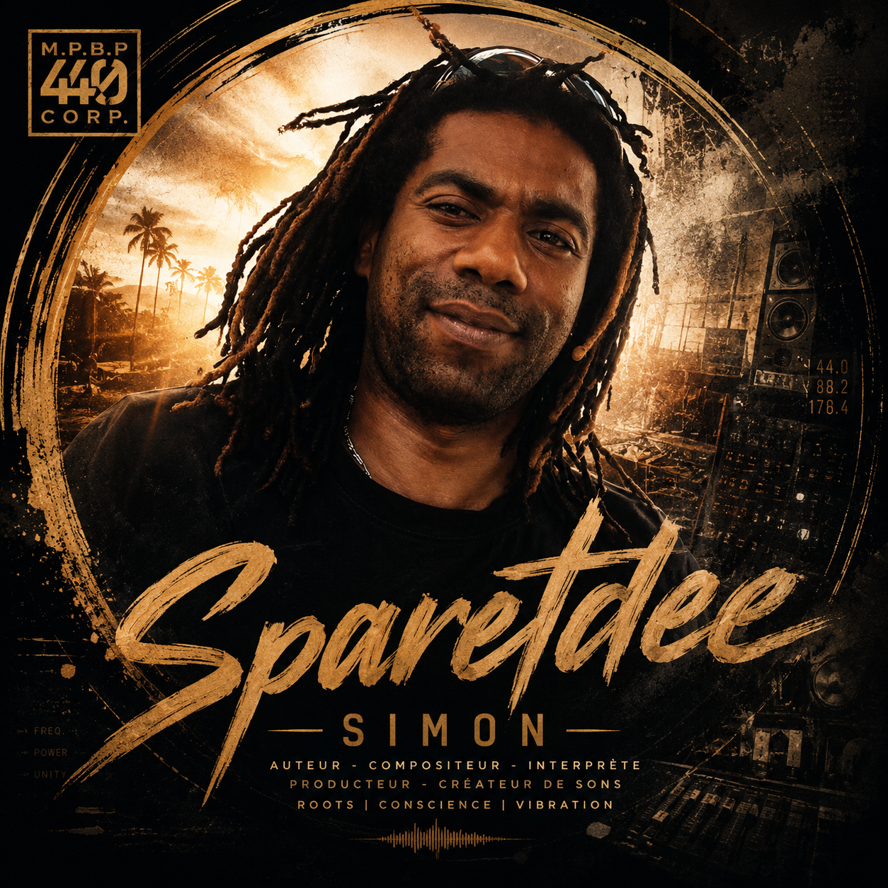

Clips
Accédez aux contenus vidéo et événements liés à l’artiste.
MPBP TV
Profil artiste officiel
Artiste principal
Sparetdee Simon porte une plume consciente, roots et urbaine, entre vécu, spiritualité, mémoire de quartier et vision futuriste. Son univers mêle hip-hop old school, textes engagés, vibrations humaines et identité MPBP440.
Discographie
Univers artiste
Accédez aux contenus vidéo et événements liés à l’artiste.
MPBP TVSuivez les annonces officielles du label et les nouvelles publications.
Lire les actusRetrouvez rapidement les titres, vidéos et événements dans le portail.
Rechercher